이 합본을 읽는 법
이 합본은 검색 노출과 AI 답변 노출을 다룬 영상 여섯 편의 정리 노트를 한 흐름으로 다시 엮은 거예요. 세 편은 이 주제를 정면으로 다루는 강의와 대담이고, 한 편은 검색엔진에 사이트를 등록하는 실습이에요. 나머지 두 편은 마케팅 스킬과 자동 운영 사이트를 다루는데, 그중 검색과 이어지는 부분만 가져왔어요.
영상 순서가 아니라 주제 순서로 모았어요. 여러 영상이 같은 말을 하면 한 번만 쓰고 누가 그랬는지 밝혔어요. 말이 다르면 나란히 놓고, 마지막 절에 표로 다시 모았어요.
아래 그림이 이 글의 지도예요. 왼쪽 '왜 달라졌나'에서 출발해, 사이트 기본기를 갖추고, 노릴 검색어를 고르고, 페이지를 채운 뒤, 결과를 재고 AI에게 맡기는 순서로 이어져요.
영상마다 이 합본에서 쓰인 자리는 다음과 같아요. 제목을 누르면 그 영상 하나만 정리한 노트로 가요. 본문에서는 둘째 열의 짧은 이름으로 불러요. 원본 유튜브 링크는 맨 아래 '참고한 곳'에 모아 뒀어요.
| 영상 | 본문에서 부르는 이름 | 채널 · 길이 | 이 합본에서 |
|---|---|---|---|
| AI 검색 시대의 SEO, 돈 되는 페이지부터 만들기 | Rob 강의 | Rob Hoffman · 1:39:38 | 3·4·6~9·11절 |
| AEO·GEO 완벽 정리: AI가 내 브랜드를 추천하게 만드는 방법 | 마케팅 조니 | 마케팅 조니 · 16:55 | 2~9·11절 |
| GPT·Claude가 우리 브랜드를 추천하게 만드는 GEO 최적화 | 헤일로 대담 | 빌더 조쉬 Builder Josh · 45:56 | 2~4·6~11절 |
| AI 웹사이트에 광고 붙여서 돈 버는 방법 | 에이브랜치 검색 등록 | AI로 만드는 1인 기업 - 에이브랜치 · 35:35 | 5·10·11절 |
| 마케팅 스킬로 Claude 마케팅 에이전트 만들기 | 투쏠 마케팅 스킬 | 투쏠ㅣAI 에이전트 · 20:20 | 6·10절 |
| AI 에이전트가 스스로 운영하는 수익형 웹사이트 만들기 | 자율 운영 사이트 | AI로 만드는 1인 기업 - 에이브랜치 · 41:19 | 5·10절 |
SEO·AEO·GEO, 무엇이 다른가요
세 이름은 '무엇을 노리느냐'로 갈라요. 마케팅 조니가 카드 세 장으로 정리해요. SEO는 검색 결과에 내 페이지가 뜨도록 키워드를 맞추는 일이에요. AEO(Answer Engine Optimization)는 AI 개요 같은 답변 칸에 들어가도록 질문과 답의 꼴로 쓰는 일이에요. GEO는 ChatGPT나 Gemini가 답을 만들 때 우리 브랜드를 골라 추천하게 하는 일이에요.
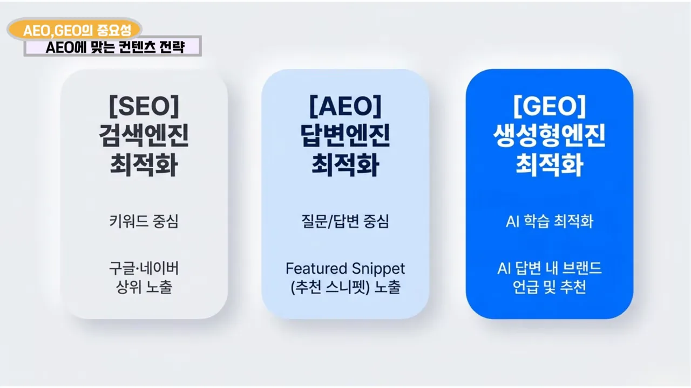
GEO는 SEO 위에 서 있어요
헤일로 대담의 게스트는 한 걸음 더 나가요. AI 검색도 구글이 해 온 순서를 그대로 밟는다는 거예요. 봇이 사이트를 읽고(크롤링), 정리해 저장하고(색인), 어떤 질문에 무엇을 보여 줄지 순위를 매겨요. 슬라이드 왼쪽이 검색, 오른쪽이 AI이고 가운데에 등호가 있어요.

그래서 순서가 생겨요. 아래층이 무너지면 위층도 서지 못해요. 게스트는 구글 AI 요약에 올라가는 결과의 약 60%가 검색 상위 10위 안의 결과라고 말해요. 마케팅 조니도 마지막에 같은 말을 해요. GEO를 한다고 SEO 기본기를 버리면 안 된다는 거예요.
클릭은 줄었는데 왜 더 중요해졌나요
예전 구글은 파란 링크 열 개를 보여 줬어요. 지금은 맨 위의 AI 개요가 답을 먼저 주고, 사람들은 ChatGPT나 Claude에 바로 묻기도 해요. 그래서 사이트로 넘어오는 클릭은 줄었어요. 세 영상 모두 이 변화에서 출발해요.
Rob 강의는 여기서 반대쪽 숫자를 보여 줘요. Ahrefs가 자기 사이트를 분석한 글이에요. AI 검색에서 온 방문자는 전체의 0.5%뿐인데 가입은 12.1%를 차지했어요. 같은 글에서 전환율이 일반 검색보다 23배 높았다고 해요.

Rob는 이유도 짚어요. AI 검색은 새 고객이 나를 처음 알게 되는 곳이기도 하지만, 광고나 이메일로 나를 알게 된 사람이 마지막으로 평판과 경쟁사를 확인하는 곳이기도 해요. 사기 직전의 사람이 들르는 곳이라는 거예요.
모든 걸 하지 말고 네 가지만
그래서 Rob는 할 일을 넷으로 줄여요. 화면의 제목도 '돈이 되는 검색에서 AI 검색을 이기는 네 단계'예요.
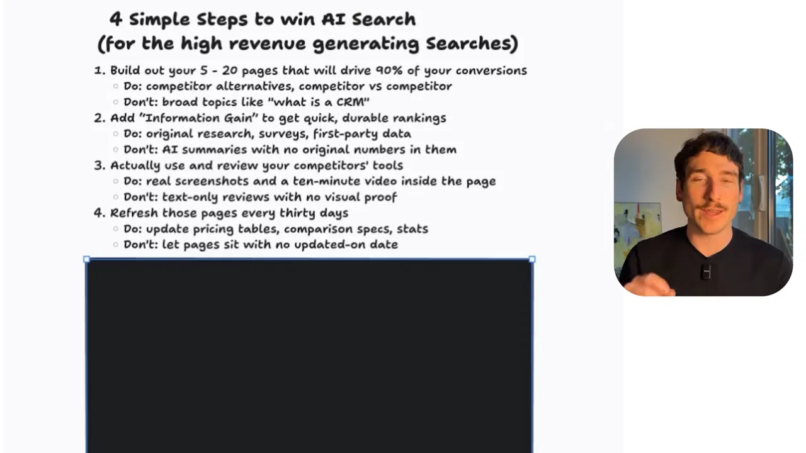
- 전환의 90%를 만들 5~20개 핵심 페이지를 만들어요 — '경쟁사 대안', '경쟁사 vs 경쟁사' 같은 구매 직전 검색어가 대상이에요(6절).
- 정보 이득을 넣어요 — 자체 조사, 설문, 1차 데이터예요. 기존 글을 AI로 요약한 글은 안 돼요(8절).
- 경쟁사 도구를 직접 써 보고 리뷰해요 — 실제 스크린숏과 짧은 영상을 페이지에 넣어요(7절).
- 30일마다 페이지를 고쳐요 — 가격표, 비교표, 숫자를 갱신하고 '마지막 수정일'을 위에 보여 줘요.
마케팅 조니는 같은 변화를 성과 지표로 말해요. 검색 순위가 KPI(Key Performance Indicator)였듯, 이제는 AI 답변 속 언급 비율이 KPI가 될 거라고 봐요. 그 재는 법은 9절에 모았어요.
봇이 읽을 수 있는 사이트부터
흔히 SEO를 '블로그 글 많이 쓰기'로 알지만 그건 절반이에요. 헤일로 대담은 나머지 절반을 테크니컬 SEO라고 불러요. 글이 무엇을 말하느냐가 아니라, 봇이 사이트를 찾아와 읽고 이해할 수 있느냐의 문제예요. 슬라이드는 이걸 네 단계로 그려요.
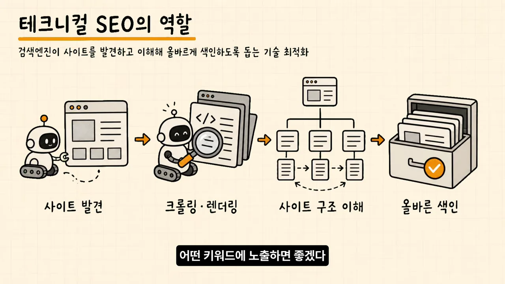
진행자 회사 사이트를 직접 진단해 봐요
게스트는 크롬 확장 프로그램 'SEO META in 1 CLICK'으로 사이트를 훑으며 하나씩 짚어요. 확장 프로그램의 Headers 탭은 페이지의 대제목·중제목·소제목 태그를 나온 순서대로 보여 줘요. 봇은 이 태그로 정보의 위계를 이해하니, 의도한 구조와 태그가 맞는지 봐야 해요.

대담에서 짚은 항목을 표로 모으면 이래요. 둘째 열은 그 항목이 무엇이고, 셋째 열은 진행자 사이트에서 실제로 걸린 점이에요.
| 항목 | 무엇인가요 | 진단에서 나온 점 |
|---|---|---|
| 타이틀·디스크립션 | 검색 결과에 뜨는 제목과 설명. 메타 정보에서 나와요 | 잘 들어가 있었어요 |
| 파비콘·사이트 이름 | 탭과 검색 결과의 작은 로고, 결과 위의 사이트 이름 | 파비콘이 없고, 사이트 이름 자리에 회사 이름 대신 도메인이 떴어요 |
| 제목 태그 위계 | H1·H2·H3로 정보의 위계를 알려요 | 의도한 구조와 맞는지 확인했어요 |
| robots.txt | 어떤 봇이 들어와 어디를 봐도 되는지 적는 '대문' | '모든 봇 환영' 세 줄뿐이었어요 |
| 사이트맵 | 들어온 봇에게 주는 '지도' | URL(Uniform Resource Locator), 수정 시각, 우선순위가 담겨 있었어요 |
| 이미지 대체 텍스트 | 그림을 못 보는 봇이 읽는 설명 | 고객사 로고에 '삼성'만 적혀 있었어요. 우리 회사 이름도 함께 넣어야 해요 |
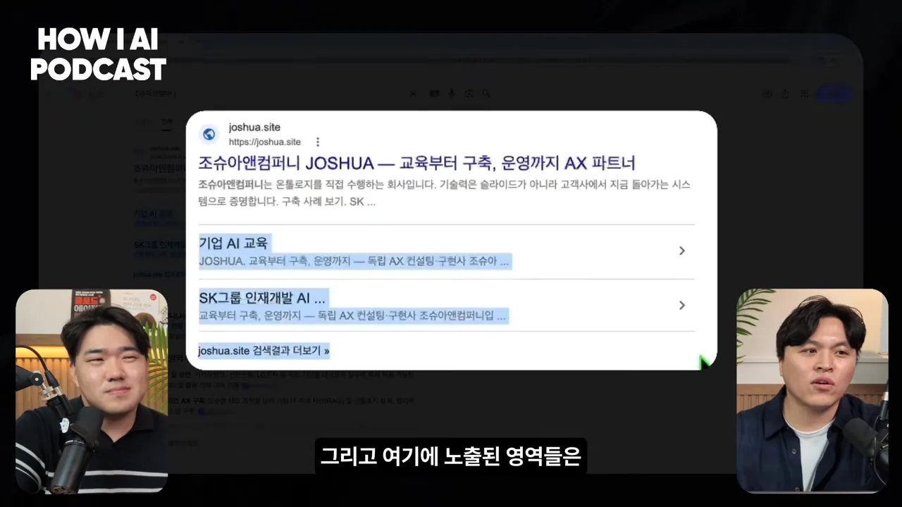
robots.txt는 대문이에요
진행자 사이트의 robots.txt는 모든 봇에게 모든 곳을 열어 둔 세 줄이었어요. 비교로 연 링크드인은 봇마다 막을 경로를 아주 길게 적어 놨어요. 게스트는 봇이 생각보다 트래픽을 많이 쓰니, 이건 트래픽 관리에 가깝다고 설명해요.

마케팅 조니는 AI 봇의 문을 열어 두라고 해요. 슬라이드에는 GPTBot과 Google-Extended를 허용하는 토글이 그려져 있어요.

사람은 보는데 AI 봇은 못 보는 페이지
헤일로 대담이 GEO에서 SEO와 가장 다르다고 꼽는 게 렌더링 방식이에요. 서버에서 페이지를 완성해 보내는 SSR(Server-Side Rendering)과, 빈 틀을 보낸 뒤 브라우저에서 내용을 채우는 CSR(Client-Side Rendering)이 있어요. 사람은 로딩을 기다렸다가 다 보지만, 봇은 안 기다리거나 기다려도 못 받아 갈 수 있어요. 게스트에 따르면 구글은 기다렸다가 가져가지만, GPT(Generative Pre-trained Transformer) 봇은 CSR 페이지에서 거의 아무것도 못 봐요.

쇼핑몰이 특히 걸려요. 상품 정보를 브라우저에서 불러오는 경우가 많고, 상세 페이지가 이미지와 영상뿐이면 AI가 내용을 이해하지 못해요. 그래서 상세 페이지를 이미지처럼 보이는 HTML(HyperText Markup Language) 텍스트로 다시 짜는 곳도 있다고 해요.
폴더 구조와 스키마
Rob 강의는 사이트 구조를 '이 사이트는 무엇의 전문가인가'를 알리는 단서로 봐요. 모든 페이지를 뿌리 주소에 흩어 두지 말고 폴더에 넣으라는 거예요. Rob의 사이트맵 그림은 다섯 폴더로 갈라져요.
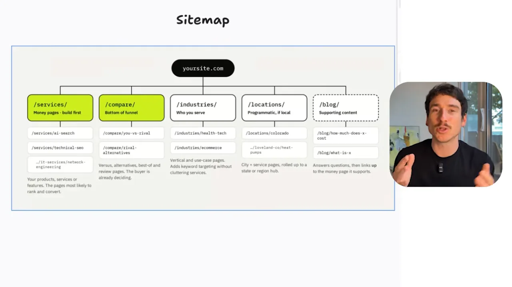
스키마는 페이지에 보이지 않지만 '이건 서비스 페이지예요'라고 검색엔진에게 알려 주는 정보예요. Rob는 KPMG(Klynveld Peat Marwick Goerdeler) 세무 서비스 페이지의 소스를 열어 보여 줘요.

검색엔진에 사이트 알리기
사이트를 잘 만들어도 검색엔진이 모르면 시작이 늦어요. 에이브랜치 검색 등록 영상은 구글, 네이버, 빙 세 곳에 사이트를 알리는 과정을 처음부터 끝까지 보여 줘요. 마케팅 조니도 구글 서치 콘솔과 빙 웹마스터 도구 등록을 '필수'로 꼽아요.
왜 빙까지 등록할까요
마케팅 조니의 답은 AI가 어디서 찾느냐예요. 슬라이드는 ChatGPT에서 빙으로, Gemini에서 구글로 화살표를 그어요. ChatGPT에 나오고 싶다면 빙에도 사이트가 있어야 한다는 거예요. 에이브랜치는 다른 이유를 대요. 빙은 엣지 브라우저의 기본 검색엔진이라 컴퓨터에 익숙하지 않은 사람들이 꽤 쓴다는 거예요.
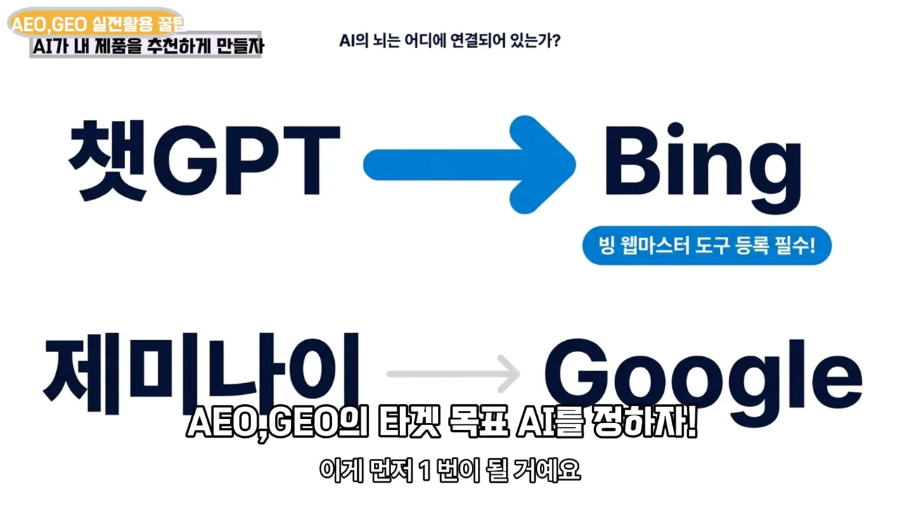
구글 서치 콘솔: 등록, 사이트맵, 색인 요청
서치 콘솔에서 속성을 추가할 때 유형은 도메인과 URL 접두어 두 가지예요. 에이브랜치는 메인 도메인을 도메인 속성으로 넣어요. 그러면 서브 도메인의 사이트맵도 같은 속성에 낼 수 있어요. 소유 확인은 DNS(Domain Name System) 레코드로 하는데, 클라우드플레어를 쓰면 승인만 누르면 끝나요.
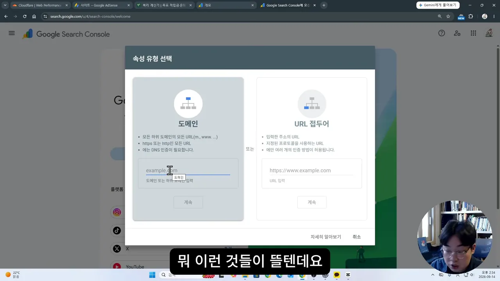
그다음 사이트맵을 내요. 사이트 주소 뒤에 /sitemap.xml을 붙여 열면 목록이 보여요. 자율 운영 사이트 영상은 사이트에 따라 /sitemap-index.xml일 수도 있으니 둘 다 열어 보라고 해요. 제출하면 서치 콘솔이 '발견된 페이지 6'처럼 읽은 결과를 보여 줘요.
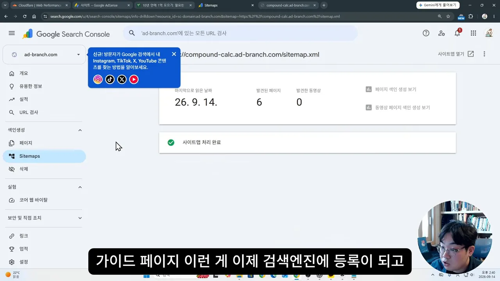
제출했다고 바로 검색에 나오지는 않아요. 구글이 돌아다니며 색인을 만들 때까지 며칠 걸려요. 앞당기는 방법이 URL 검사예요. 첫 페이지 주소를 검사하면 '등록되어 있지 않음'이 뜨고, 여기서 색인 생성을 요청하면 우선순위 크롤링 대기열에 들어가요.
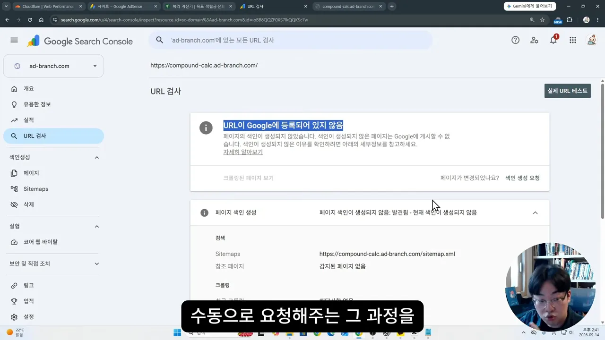
다만 하루에 할 수 있는 양이 정해져 있고, 많이 한다고 좋지도 않아요. 에이브랜치는 첫 페이지, 정책 페이지, 카테고리 페이지 등 3~5개, 많아야 7개만 요청해요.
네이버와 빙
네이버는 서치 어드바이저에서 등록해요. 소유 확인은 HTML 태그 방식으로 메타 태그 한 줄을 사이트에 붙이는데, 에이브랜치는 이 줄을 AI 코딩 도구에 넘기고 배포까지 맡겨요. 그다음 사이트맵을 내고, robots.txt를 확인하고, 웹 페이지 수집을 요청해요.
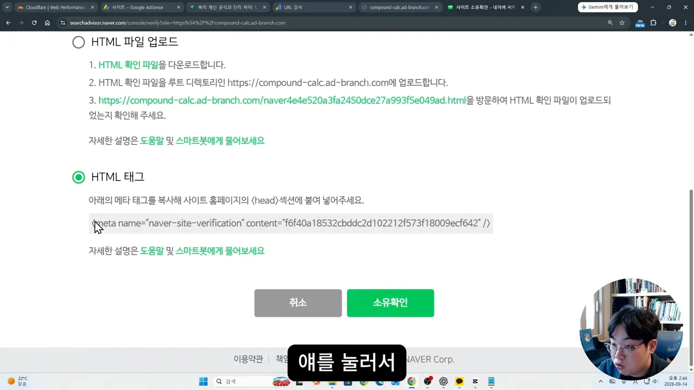
빙이 가장 쉬워요. 빙 웹마스터에 구글 계정으로 들어가면 서치 콘솔에 등록한 사이트를 그대로 가져올 수 있어요.
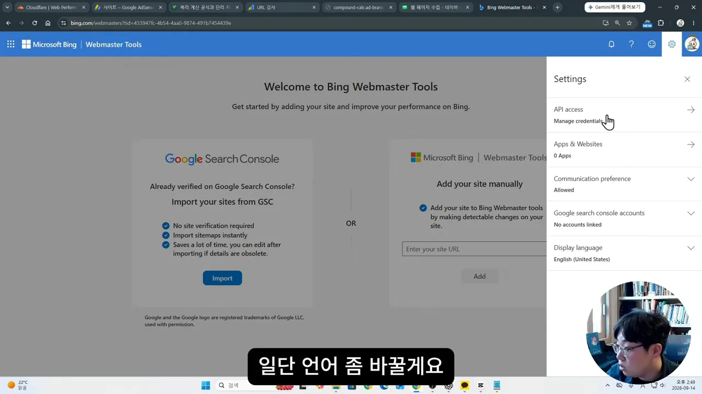
영상이 마지막에 정리한 10단계를 줄이면 이래요.
- 서치 콘솔에 메인 도메인을 도메인 속성으로 등록해요 — DNS 레코드로 소유 확인.
- 사이트맵 주소를 열어 확인하고 제출해요 '발견된 페이지' 수가 떠요
- URL 검사로 핵심 페이지 3~7개만 색인을 요청해요
- 네이버 서치 어드바이저에 등록하고 메타 태그를 붙여요 — 사이트맵 제출과 수집 요청까지.
- 빙 웹마스터에서 서치 콘솔 사이트를 가져와요 — 사이트맵과 색인 요청도 해 두면 좋아요.
어떤 검색어를 노릴까요
사이트가 준비되면 어떤 검색어로 싸울지 정해요. 여기서 Rob 강의와 헤일로 대담은 출발점이 달라요. Rob는 '돈'에서, 헤일로 대담은 '고객이 검색해 나가는 길'에서 시작해요. 둘을 차례로 보고, 마케팅 조니와 투쏠 마케팅 스킬의 보탬을 붙일게요.
Rob: 수익부터 거꾸로 계산해요
대부분은 키워드 조사부터 시작하는데, Rob는 그게 거꾸로라고 봐요. 먼저 평균 주문 금액, 고객 생애 가치(LTV(Lifetime Value)), 전환율을 알아야 해요. 그러면 몇 건의 전환이 필요하고, 그러려면 방문이 얼마나, 검색량이 얼마나 필요한지 거꾸로 따라갈 수 있어요.
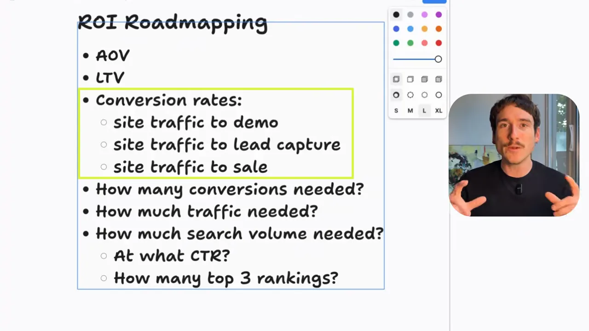
계산에 넣을 검색어는 세 조건을 다 갖춰야 해요. 검색량이 충분하고, 이길 만한 난이도이고, 구매 의도가 높아야 해요. Rob의 예시 계산은 12개월 ROI(Return On Investment)가 약 700%로 나와요. 다만 이 숫자는 투자할지 말지 보는 기준점일 뿐이라고 여러 번 강조해요. 클릭 없이 끝나는 AI 검색도 많아서 정확할 수 없거든요.
돈이 되는 검색어 여섯 가지
Rob는 누가·무엇·왜로 시작하는 정보성 검색어는 대부분 시간 낭비라고 봐요. 'CRM을 왜 써야 하나요?'를 검색하는 사람은 아직 살 단계가 아니에요. 대신 7년 동안 가장 많은 매출을 만들었다는 여섯 가지를 꼽아요.
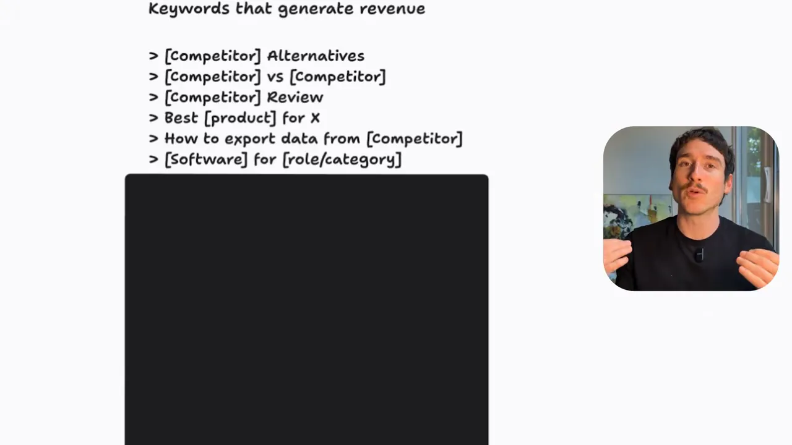
| 검색어 꼴 | 예시 (CRM 회사 Attio의 입장) | 왜 돈이 되나요 |
|---|---|---|
| [경쟁사] 대안 | HubSpot alternatives | 가격이나 규모가 안 맞아 갈아탈 곳을 찾는 사람이에요 |
| [경쟁사] vs [경쟁사] | HubSpot vs Salesforce | 두 회사 비교 페이지에 나를 세 번째 선택지로 끼워 넣어요 |
| [경쟁사] 리뷰 | HubSpot review | 직접 써 본 리뷰에서 내 제품 페이지로 이어요 |
| [제품] 추천 | best CRM for agencies | 구체적일수록 구매 직전이에요 |
| [경쟁사]에서 데이터 내보내기 | export contacts from HubSpot | 갈아타려는 사람의 검색어예요 |
| [직군·업종]용 [소프트웨어] | 부동산 중개인용 CRM | 들어오는 사람이 바로 내 이상적 고객이에요 |
이길 수 있는지는 상위 페이지로 판단해요
Rob는 Ahrefs의 키워드 난이도를 믿지 말라고 해요. 'HubSpot vs Salesforce'는 월 5,000회 가까이 검색되는데 난이도가 0(쉬움)으로 나와요.

대신 지금 상위에 있는 페이지들의 DR(Domain Rating)을 보래요. 내 DR이 그보다 높으면 해 볼 만해요. 상위 결과가 블로그인지, 미디어인지, 제품 페이지인지도 봐요. 구글은 검색어마다 보여 주고 싶은 사이트 종류를 정해 두기 때문이에요.
한 페이지에 검색어 묶기
한 페이지는 대표 검색어 하나에 보조 검색어 12~20개를 함께 노려요. 'HubSpot alternatives' 페이지라면 'HubSpot competitors', '싼 HubSpot 대안' 같은 표현을 소제목으로 넣어요. 여기서 생기는 문제가 키워드 카니발리제이션이에요. 판단 기준은 '한 페이지로 두 검색자를 다 만족시킬 수 있나'예요. 두 검색어를 구글에 쳐서 같은 페이지가 나오면 한 페이지로 묶어요.
Rob는 묶음마다 할 일을 셋 중 하나로 정해요. 새로 만들기, 이미 노출되는 페이지 키우기, 서로 먹는 페이지 합치기예요. 합칠 때는 대표 페이지를 정하고 나머지를 301 리디렉트로 보내요. 이 모든 걸 스프레드시트 한 장에 적어요.

헤일로 대담: 고객이 검색해 나가는 길
헤일로 대담은 검색어 하나가 아니라 길을 봐요. 사람들은 궁금증 → 정보 이해 → 대안 탐색 → 비교 → 추천과 결정 순서로 검색해 나가요. '제조 AX가 뭐야?'에서 시작해 '어디가 좋아?'로 끝나는 식이에요.
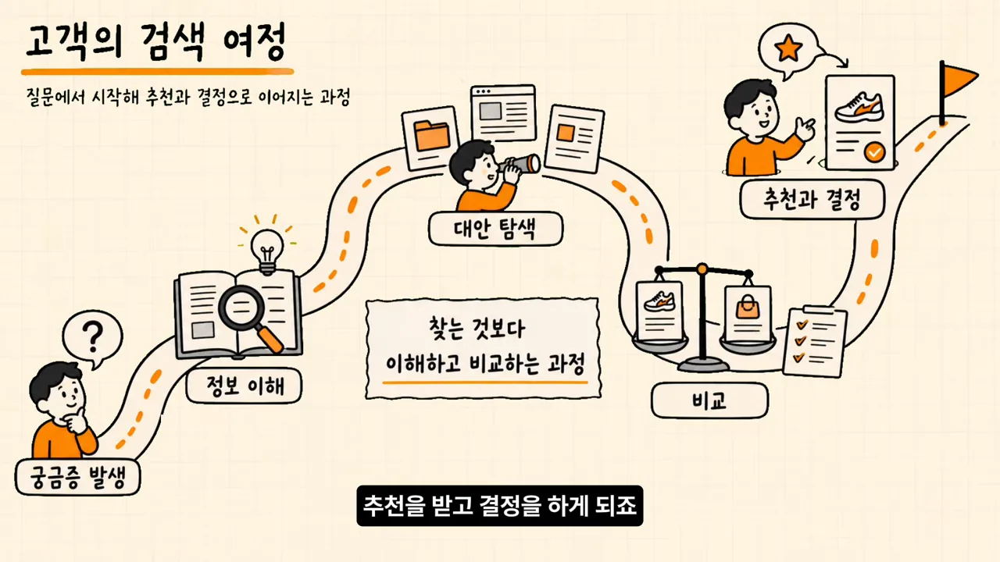
구글의 '관련 질문' 칸이 이 길의 단서예요. 'AX란 무엇인가요?', 'DX와 AX의 차이점은?' 같은 질문이 그대로 사이트의 콘텐츠 목록이 돼요. 질문에 답하는 글로 방문을 받고, 잘 갖춘 사이트로 믿음을 쌓으면 문의가 들어온다는 계산이에요.
바로 차지하기 어려운 큰 검색어는 둘레부터 먹어 들어가요. 게스트는 이걸 '땅따먹기'라고 불러요. 아래 그림은 'CRM 마케팅 성공 사례'를 가운데 두고 연관 검색어를 이은 지도예요.

AI에게 묻는 말은 길고 조건이 붙어요
마케팅 조니는 AI 시대의 검색어가 문장이 된다는 점을 짚어요. 사람들은 "서울 펜션 추천해 줘"가 아니라 "수영장 있는 펜션", "아이와 갈 만한 펜션"처럼 조건을 붙여 물어요. 그 표현을 그대로 제목과 소제목에 쓰라고 해요.

투쏠 마케팅 스킬에서 Claude가 짜 준 콘텐츠 전략도 같은 쪽을 가리켜요. 비율은 '검색 70, 공유 30'이에요. 중심 검색어는 검색량은 작지만 구매 의도가 높은 '노션 CRM'으로 잡았어요.
AI가 가져가는 페이지의 생김새
검색어를 정했으면 페이지를 만들어요. Rob 강의는 실제로 구글 1위이면서 AI 개요에도 인용되는 글 하나를 위에서부터 해부해요. 고객사 Frontal의 'Best GTM Agency in 2026'이에요.

위에서부터 부품 하나씩
글 머리에는 실제 사람의 이름과 직함, 읽는 시간, 수정 날짜가 있어요. 최근에 고친 글일수록 유리하다고 해요.
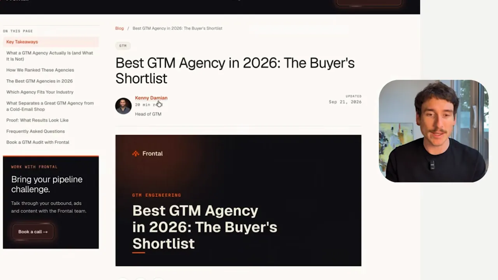
바로 아래에 핵심 요약 상자가 와요. 사람도 AI도 여기서 요점을 빨리 가져가요. 헤일로 대담이 말하는 글의 순서도 같아요. 요약(TL;DR) → 개념 → 분석 → 비교표 → 참고 자료예요.

그다음은 용어 정의('GTM 대행사란 무엇이고 무엇이 아닌가')와 방법론이에요. 어떤 기준으로 순위를 매겼는지 밝혀 두는 거예요. 선택지마다 '이런 사람에게 맞아요'를 적어 두면, AI가 그대로 '○○에게는 A'라고 답한다고 해요.
비교표가 AI 개요로 옮겨 가요
이 해부에서 가장 눈에 띄는 장면이에요. 글 안의 비교표가 있고, 구글 AI 개요에 'Top GTM Agencies at a Glance' 표가 떠요. 그리고 오른쪽 출처 카드 맨 위가 이 글이에요.
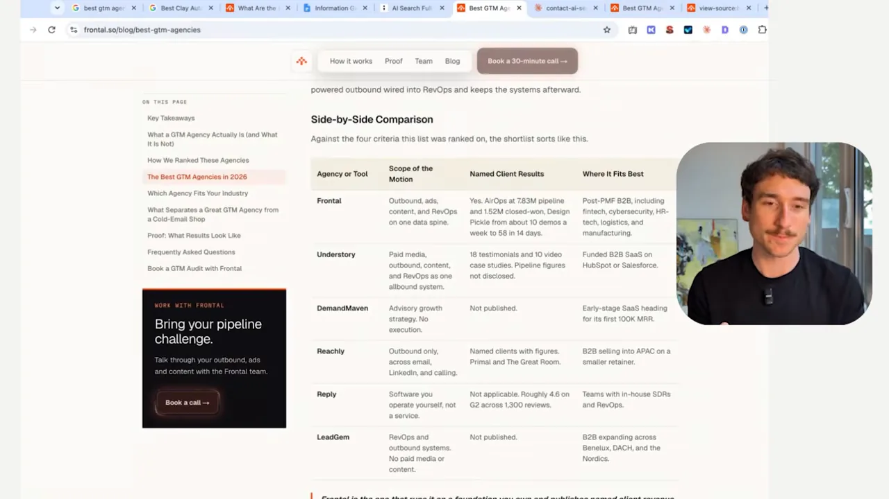
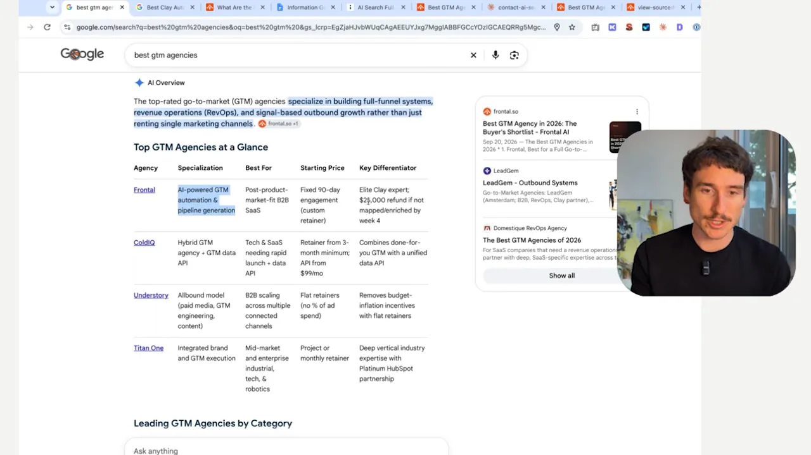
헤일로 대담도 같은 결론이에요. GPT는 중립적인 글을 좋아해서 비교 콘텐츠가 잘 맞아요. 자사 제품은 균형 있게 넣거나 자사 중심으로 녹일 수 있다고 해요. 통계 숫자와 전문가 인용도 넣으라고 해요. 마케팅 조니도 GEO 4원칙의 첫째로 믿을 만한 출처 인용을 꼽아요. 전문가 의견과 공식 기관 데이터를 AI가 선호한다는 거예요.
끝은 질문과 답, 그리고 CTA
글 끝에는 FAQ가 와요. Rob의 규칙은 답을 2~3문장으로 쓰고, FAQ 제목은 H2, 질문은 H3로 두는 거예요. AI에게 묻는 질문 꼴의 검색어를 함께 잡을 수 있어요. 마케팅 조니의 질문·답변 구조와 같은 생각이에요.

CTA는 위·가운데·아래 최소 셋, 많아야 다섯이 적당하다고 해요. 중요한 건 CTA가 페이지 내용과 맞아야 한다는 점이에요. GTM(Go-To-Market) 대행사를 찾는 사람에게는 'GTM 진단 통화'를 권해요.
남이 못 베끼는 정보와 빌려 쓰는 채널
다들 AI로 기존 글을 요약해 올리니까, 검색엔진은 새 정보가 있는 글을 가려내야 해요. Rob 강의는 이걸 정보 이득이라고 불러요. 근거로 구글이 가진 특허 하나를 보여 줘요. 사용자가 이미 본 문서 너머의 정보를 얼마나 담았는지 점수를 매기는 내용이에요.
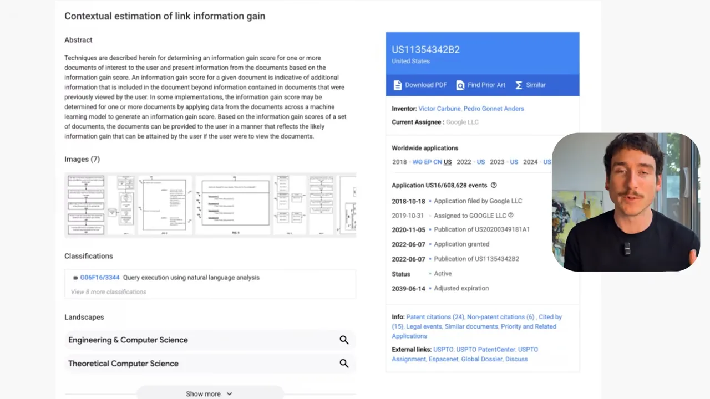
정보 이득은 생각보다 쉽게 만들어요
Rob가 꼽는 재료는 이래요. 제품을 실제로 쓰는 스크린숏, 공개해도 되는 자체 데이터, 고객 후기, 전문가 인터뷰 영상, 원본 조사와 설문, 직접 겪은 사례, 근거 있는 반대 의견, 계산기 같은 도구, 내가 이름 붙인 프레임워크예요.
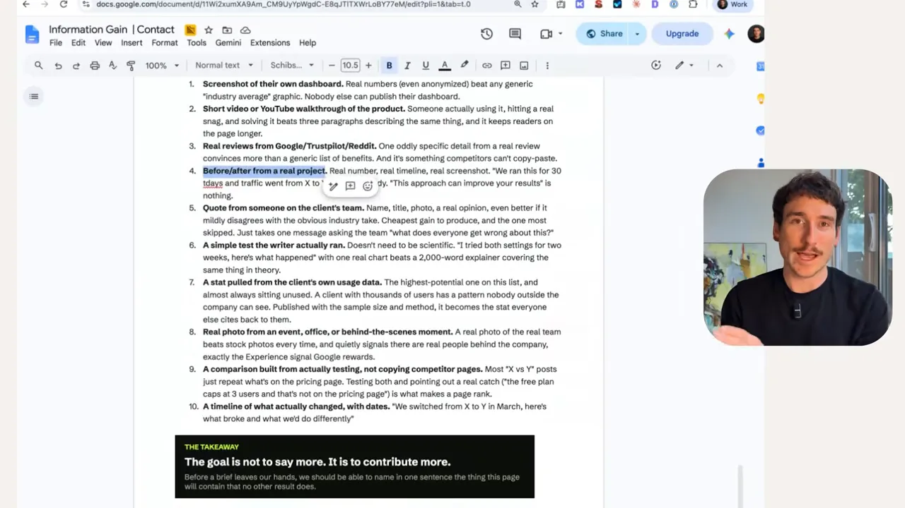
The goal is not to say more. It is to contribute more.
목표는 더 많이 말하는 게 아니라 더 많이 보태는 거예요.
— Rob 강의 화면, 1:21:50
30분이면 되는 조사 예시도 보여 줘요. ChatGPT와 Claude에 같은 프롬프트로 헤밍웨이풍 세 문장 소설을 쓰게 하고, 읽기 수준을 재는 앱으로 점수를 매기는 식이에요. 남이 안 해 본 작은 실험 하나가 그 글만의 정보가 돼요.
정보 이득이 아닌 것도 있어요. 상위 글 요약, 근거 없는 의견, 기존 정보를 순서만 바꾼 가이드예요. Rob의 다섯 단계는 상위 글 읽기 → 빠진 정보 찾기 → 내가 채울 것 고르기 → 조사와 방법론을 잘 보이게 쓰기 → 내 기여를 지워도 글이 서는지 확인하기예요. 마지막 단계에서 글이 그대로 서면, 보탠 게 없다는 뜻이에요.
내 사이트가 약하면 남의 채널을 빌려요
도메인 권위가 낮을 때 Rob가 쓰는 길은 링크드인과 유튜브예요. 그에 따르면 링크드인은 AI 답변에서 두 번째로 많이 인용되는 사이트이고, 구글 AI 개요에서는 유튜브가 1위예요.

링크드인에는 웹사이트 글을 다시 써서(복붙 금지) 아티클로 올려요. 창업자 개인이 아니라 회사 계정에 올려야 회사 이름과 검색어가 이어져요. Frontal은 이렇게 올린 링크드인 글이 구글 1위에 올랐어요.

유튜브는 아직 공급이 수요를 못 따라간다고 해요. AI 개요가 인용하는 영상이 그림 한 장에 AI 음성을 입힌 영상일 때도 있어요. 조금만 더 맞는 영상을 만들면 이길 수 있다는 뜻이에요. 특히 자막이 중요해요. AI는 영상을 보지 못하고 대본을 읽기 때문이에요.

한국에서는 열린 채널과 공공 사이트
마케팅 조니는 한국 사정을 짚어요. 네이버 블로그는 닫힌 플랫폼이라 AI가 잘 못 읽어요. 그래서 티스토리, 워드프레스, 관련 매체의 보도자료처럼 열린 채널에 올리는 게 유리하다고 해요.
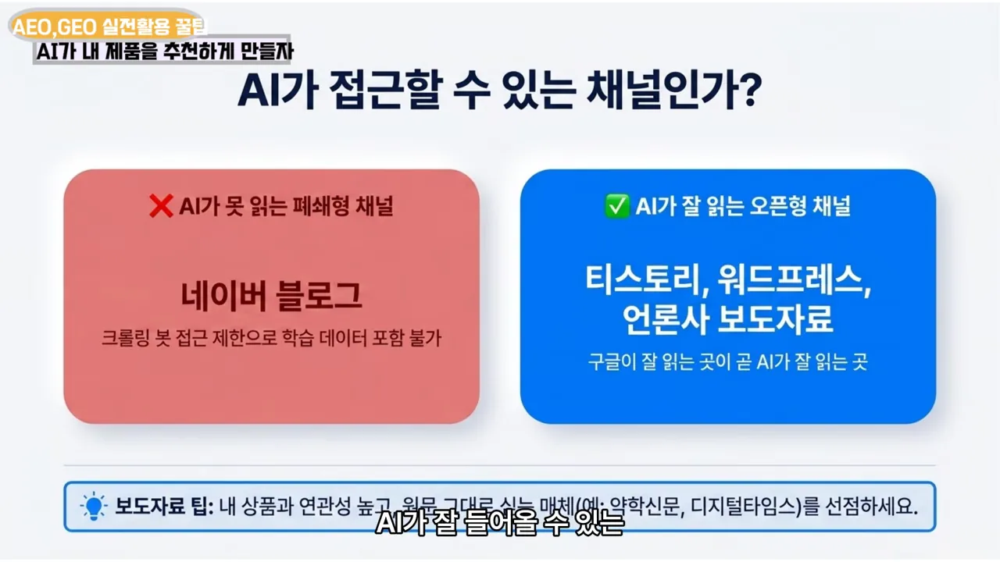
AI가 먼저 찾아보는 사이트에 내 정보를 올리는 길도 있어요. 진행자 지인의 글램핑장은 ChatGPT가 같은 질문 10번 모두 한국관광공사의 고캠핑을 먼저 찾았어요. 고캠핑에 정보를 등록하자 ChatGPT가 그곳을 추천하기 시작했다고 해요. 헤일로 대담도 같은 생각이에요. 엔진마다 인용하는 사이트가 다르니, 위키피디아를 잘 인용하는 엔진이라면 위키피디아 노출을 고민해 볼 수 있다고 해요. 그 사이트를 찾는 법은 9절에 있어요.
백링크는 마지막이에요
Rob는 백링크를 강의 맨 끝에 다뤄요. 대행사들이 링크를 싸게 사서 비싸게 파는 장사를 한다는 게 그의 의견이에요. 스팸 사이트의 링크는 오히려 벌점을 부를 수 있어요. 정보 이득이 있는 글을 쓰면 링크는 자연히 따라오고, 받을 거라면 같은 분야의 권위 있는 사이트에서 받으라고 해요.
AI 답변 속 노출 재기
검색은 순위로 재면 됐어요. AI 답변은 순위가 없어서 재는 법을 새로 정해야 해요. 세 영상이 쓰는 방법을 모으면 셋이에요. 손으로 여러 번 물어보기, 답변 속 등장 방식을 나눠 보기, 도구로 꾸준히 추적하기예요.
같은 질문을 10번 던져요
마케팅 조니의 방법이 가장 간단해요. "40대 여성용 주름 개선 화장품 추천해 줘"를 10번 묻고 우리 제품이 몇 번 나오는지 세요. 이게 LLM(Large Language Model) 가시성 점수예요. 슬라이드는 이걸 검색 순위를 잇는 새 KPI로 그려요.
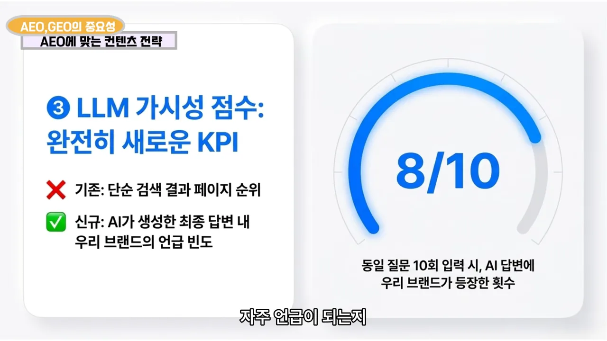
테스트할 때 하나 조심할 게 있어요. 개인화 메모리가 켜져 있으면 답이 내 쪽으로 기울어요. 그래서 임시 채팅을 켜고 물어요. 헤일로 대담도 구글과 GPT는 사람마다 결과가 달라지니 게스트 모드로 검색하라고 해요.

AI가 먼저 찾는 사이트를 역추적해요
마케팅 조니는 한 걸음 더 가요. 싱킹 모드로 같은 질문을 10번 던지고 화면을 녹화해요. 그러면 AI가 답을 만들기 전에 공통으로 먼저 찾아보는 사이트가 보여요. 8절의 고캠핑이 이렇게 찾은 사이트예요.

멘션, 소스, 인용을 나눠 봐요
헤일로 대담은 'AI 답변에 나왔다'를 세 가지로 쪼개요. 답변 문장 안에 브랜드 이름이 나왔으면 멘션이에요. 답을 만드는 데 우리 사이트를 가져다 썼으면 소스예요. 그중에서도 문장 끝에 우리 주소가 붙었으면 인용이에요.
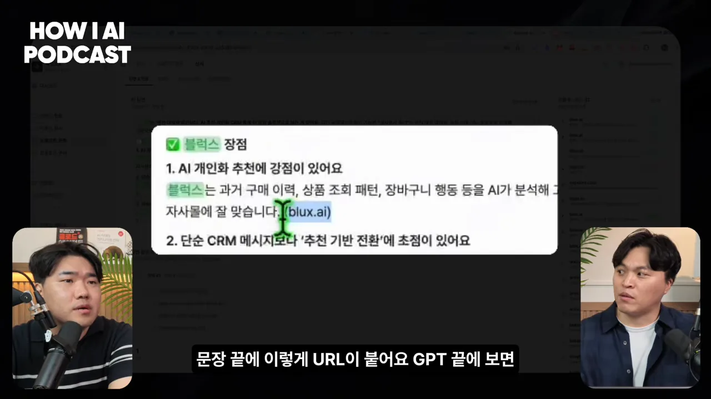
멘션됐다면 경쟁사보다 몇 번째로 추천됐는지도 봐요. 엔진마다 인용하는 사이트가 다르니 ChatGPT, Gemini, Perplexity, Claude를 따로 재요. 마케팅 조니는 반대로 처음엔 AI 하나만 정하라고 해요. 둘의 차이는 11절 표에 넣었어요.
도구로 꾸준히 재요
손으로 묻는 건 시작일 뿐이에요. Rob 강의는 세 가지를 같이 봐요. 트래픽과 순위는 구글 서치 콘솔, 문의나 상담 예약 같은 전환은 GA4(Google Analytics 4), AI 답변 속 노출은 별도의 AI 가시성 추적 도구(예: Profound)예요.

헤일로 대담의 게스트는 직접 만든 도구로 검색어마다 우리 순위, 경쟁사 순위, AI 요약 인용 여부를 한 화면에 모아요. 진단 점수에는 절대 기준이 없으니, 이전보다 좋아지는지를 보는 용도로 쓰라고 해요.

| 무엇을 재나요 | 어떻게 | 누가 말했나요 |
|---|---|---|
| 검색 순위와 클릭 | 구글 서치 콘솔 | Rob 강의 |
| 문의·가입 같은 전환 | GA4 | Rob 강의 |
| AI 답변 속 등장 비율 | 같은 질문 10번 (임시 채팅) | 마케팅 조니 |
| AI가 먼저 찾는 사이트 | 싱킹 모드 녹화로 역추적 | 마케팅 조니 |
| 멘션·소스·인용, 추천 순서 | 엔진별 추적 도구 | 헤일로 대담 |
| AI 가시성 추세와 출처 | Profound 같은 추적 도구 | Rob 강의 |
AI에게 맡길 때
여섯 영상 중 네 편이 AI 도구를 손에 쥐고 작업해요. 다만 맡기는 범위는 달라요. 등록이나 코드 붙이기 같은 손일은 그대로 맡기고, 판단이 필요한 세부는 사람이 챙기는 쪽이에요.
"SEO 최적화해 줘" 한 줄로는 부족해요
헤일로 대담의 진행자는 Claude Code에게 'SEO 최적화해 줘'라고 한 번 시켰어요. 게스트는 AI가 해 주는 것처럼 보여도 세부를 놓친다고 짚어요. 4절의 진단에서 걸린 파비콘, 사이트 이름, 로고 대체 텍스트가 그런 세부예요.
손일은 그대로 맡겨요
에이브랜치 검색 등록 영상은 소유 확인 코드나 메타 태그처럼 사이트에 한 줄 붙이는 일을 AI 코딩 도구에 넘겨요. 클라우드플레어 플러그인을 불러 두면 배포까지 알아서 해요. 네이버 메타 태그도 같은 방식으로 붙여요(5절).
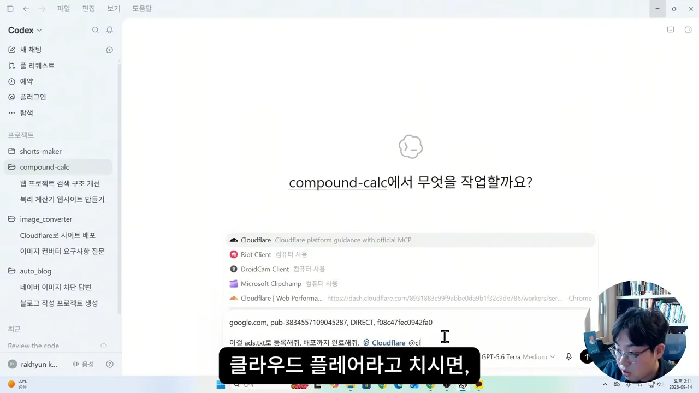
마케팅 스킬 묶음에 SEO 갈래가 있어요
투쏠 마케팅 스킬 영상은 marketingskills라는 스킬 모음을 Claude에 넣어 써요. README 그림을 보면 맨 위의 '제품 마케팅 맥락' 문서를 모든 스킬이 먼저 읽어요. 그 아래 일곱 갈래 중 첫째가 SEO & Content이고, 표에는 ai-seo와 seo-audit 스킬이 있어요.
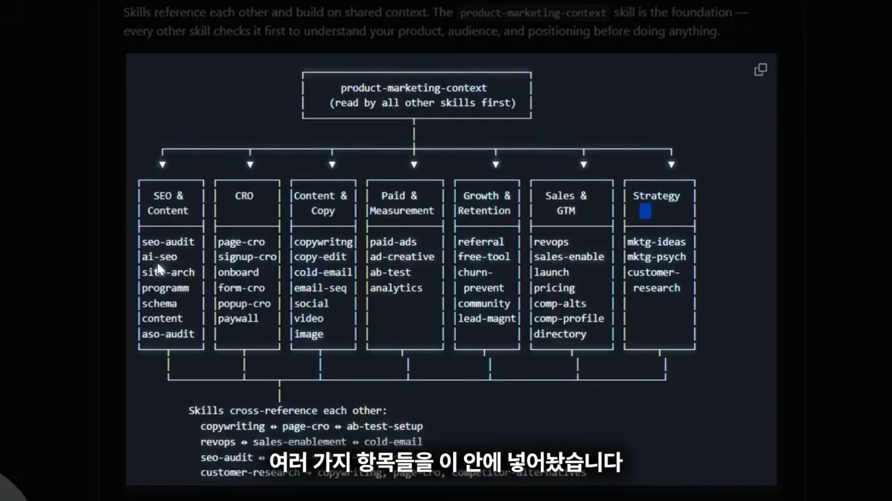
영상에서 쓴 콘텐츠 전략 스킬의 원칙은 '모든 콘텐츠는 검색되거나 공유되거나 둘 다여야 한다'예요. 발표자는 스킬이 미국 기준이라 한국 채널 사정은 따로 알려 줘야 한다고 덧붙여요. 8절의 '네이버 블로그는 AI가 못 읽는다' 같은 사정이 그런 예예요.
글 발행을 통째로 맡기면
자율 운영 사이트 영상은 가장 멀리 가요. AI 에이전트가 하루 세 번 기사를 찾아 글을 쓰고 배포까지 해요. 사이트는 Astro로 만드는데, 발표자는 가볍고 빨라서 SEO·GEO 설정과 속도에 유리하다는 이유로 골랐어요. 첫 글은 짧았지만 설명글, 단락 구분, 원문 출처 같은 SEO 기본은 지켰어요.
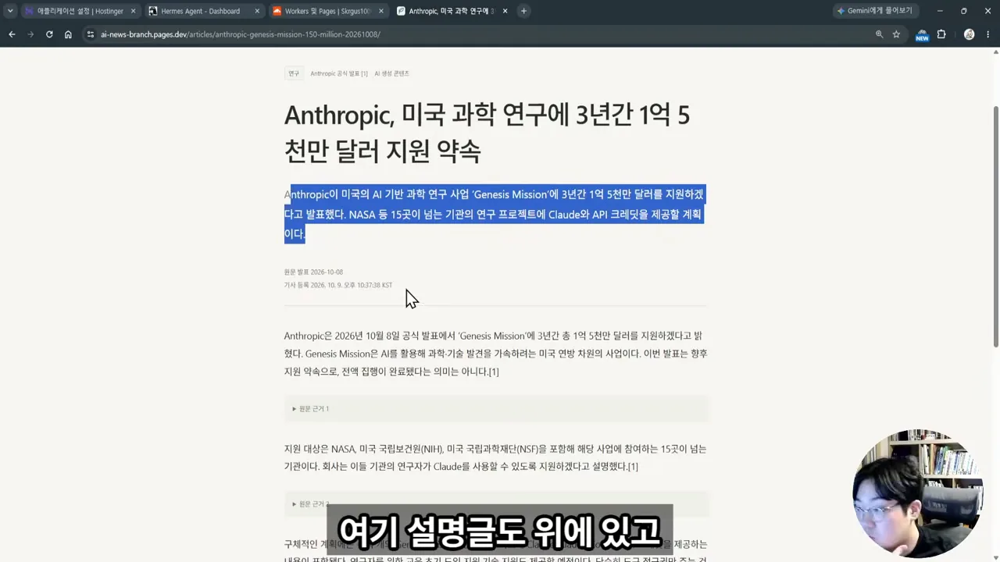
그런데 발표자도 한계를 말해요. 기사만 정리해서는 노출이 좋아지지 않으니, 내 관점을 넣게 하거나 SEO·GEO 규칙을 지키게 미리 정해 두라고 해요. 8절의 정보 이득과 같은 이야기예요. 남의 기사를 요약만 한 글은 Rob가 '정보 이득이 아닌 것'으로 꼽은 바로 그 꼴이에요. 구글 스팸 정책의 '대량 생성 콘텐츠 남용'도 함께 떠올려 볼 만해요(8절 보충 설명).
영상마다 다른 말과 시작 전 점검표
여섯 영상은 큰 방향이 같아요. 사이트 기본기가 먼저이고, 고객의 질문에 답하는 페이지를 만들고, AI 답변 속 노출을 따로 재요. 다만 세부에서는 말이 갈려요. 어느 쪽이 맞다기보다 상황이 달라서 생긴 차이가 많아요.
| 주제 | 한쪽 | 다른 쪽 | 어떻게 읽을까요 |
|---|---|---|---|
| '○○란?' 같은 정보성 글 | Rob 강의: 대부분 시간 낭비, 구매 직전 검색어부터 | 헤일로 대담: '관련 질문'에 답하는 글이 콘텐츠 목록 | Rob는 이미 시장이 있는 소프트웨어, 헤일로 대담은 'AX'처럼 개념부터 알려야 하는 새 분야예요. 시장이 낯설수록 정보성 글의 몫이 커져요 |
| 키워드 난이도 점수 | Rob 강의: Ahrefs 난이도는 믿지 말고 상위 페이지 DR을 봐요 | 헤일로 대담: 진단 점수는 절대 기준이 아니라 추세용 | 둘 다 '도구 숫자 하나로 판단하지 말라'는 쪽이에요 |
| 노릴 AI | 마케팅 조니: ChatGPT나 Gemini 하나를 먼저 정해요 | 헤일로 대담: 네 엔진을 따로 재요 | 작게 시작할 때는 하나, 도구로 추적할 수 있으면 여럿이에요 |
| 네이버 | 마케팅 조니: 네이버 블로그는 닫혀 있어 AI가 못 읽어요 | 에이브랜치 검색 등록: 서치 어드바이저에는 꼭 등록해요 | 블로그 채널로는 약하지만, 내 사이트를 네이버 검색에 알리는 일은 따로 해요. 헤일로 대담은 B2B(Business to Business)라면 구글이 먼저라고 해요 |
| AI 봇 허용 | 마케팅 조니: GPTBot, Google-Extended를 허용해요 | OpenAI·구글 문서: 검색 노출은 OAI-SearchBot, Google-Extended는 검색 순위와 무관 | 검색 노출이 목표라면 검색용 봇을 열어요(4절 보충 설명) |
| 백링크 | Rob 강의: 맨 마지막, 사지 말아요 | 나머지 영상: 거의 다루지 않아요 | 정보 이득이 있는 글이 링크를 부른다는 게 Rob의 순서예요 |
얼마나 걸리나요
헤일로 대담은 SEO 성과가 나기까지 짧으면 1~2개월, 길면 6개월이 걸린다고 해요. 그래서 처음부터 시작하되, 그동안은 퍼포먼스 마케팅으로 손님을 데려오고 CRM으로 붙잡아 두는 일을 함께 하라고 해요. 에이브랜치 검색 등록도 같은 계산이에요. 광고 승인을 기다리는 동안 검색 유입을 쌓아 두라는 거예요.
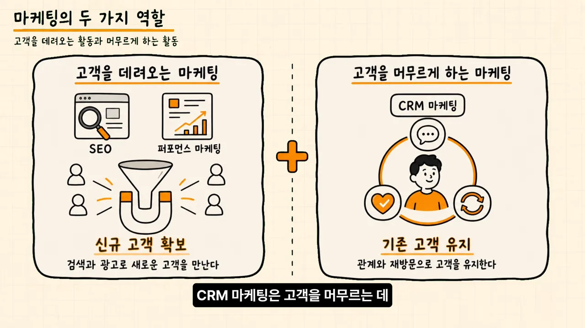
시작 전 점검표
여섯 영상에서 바로 손댈 일만 순서대로 모았어요. 괄호는 자세한 설명이 있는 절이에요.
- 파비콘, 사이트 이름, 페이지마다 타이틀과 디스크립션이 들어가 있나요? (4절)
- 페이지마다 H1이 하나이고, H2·H3가 의도한 구조대로 놓였나요? (4절)
- robots.txt가 검색용 봇과 AI 검색 봇을 막고 있지 않나요? (4절)
- 중요한 페이지가 CSR이라 AI 봇에게 비어 보이지는 않나요? (4절)
- 이미지 대체 텍스트에 우리 회사·제품 이름이 들어가 있나요? (4절)
- 구글 서치 콘솔, 네이버 서치 어드바이저, 빙 웹마스터에 등록하고 사이트맵을 냈나요? (5절)
- 핵심 페이지 3~7개에 색인 요청을 넣었나요? (5절)
- 평균 주문 금액, LTV, 전환율로 SEO에 쓸 돈의 기준점을 계산했나요? (6절)
- '대안', 'vs', '추천', '직군별' 같은 구매 직전 검색어로 첫 5~20개 페이지를 정했나요? (6절)
- 검색어 묶음마다 새로 만들기·키우기·합치기 중 하나를 정하고 한 시트에 적었나요? (6절)
- 페이지에 저자, 수정 날짜, 핵심 요약, 비교표, FAQ, 내용에 맞는 CTA가 있나요? (7절)
- 남이 못 베끼는 정보(직접 써 본 화면, 자체 데이터, 작은 실험)가 하나 이상 있나요? (8절)
- 도메인이 약하다면 링크드인 아티클, 유튜브 영상, 열린 블로그에 다시 써서 올렸나요? (8절)
- 임시 채팅으로 같은 질문을 10번 묻고 LLM 가시성 점수를 적어 뒀나요? (9절)
- 30일마다 가격, 비교표, 숫자를 고치고 수정 날짜를 바꾸고 있나요? (3절)